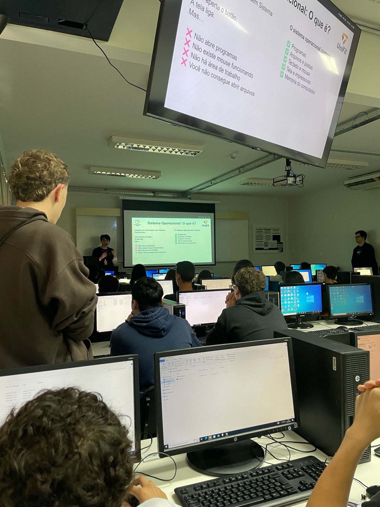

Relatório – 2ª Aula
Data: 19/05/2026
Turma: D
Instrutor: Kawan
Relatório – Hardware Básico e atalhos de teclado
Na aula de hoje foi introduzido os conceitos básicos da computação, o instrutor começou a aula falando sobre arquitetura de computadores, foi apresentado aos alunos a diferença entre hardware e software, ele também mostrou como é um computador e seus respectivos componentes: Placa-mãe, CPU, RAM, HD, fonte.
Durante a explicação ele passou algumas peças para os alunos verem, a memória e a CPU. Logo após foi entregue os crachás de identificação do curso para os alunos, e quem não veio na aula passada foi para outro laboratório para realizar a avaliação de nível, para verificar o conhecimento prévio dos alunos.
Após isso, foi apresentado outro conteúdo, os atalhos do Windows, os alunos conheceram atalhos como Ctrl+C, Ctrl+V, Ctrl+Z, Ctrl+X, Alt+Tab, entre muitos outros. No fim da aula, fizemos um kahoot sobre todo o conteúdo da aula. Foram 30 questões sobre arquitetura e atalhos. Depois terminamos a aula tirando uma foto geral da turma.
